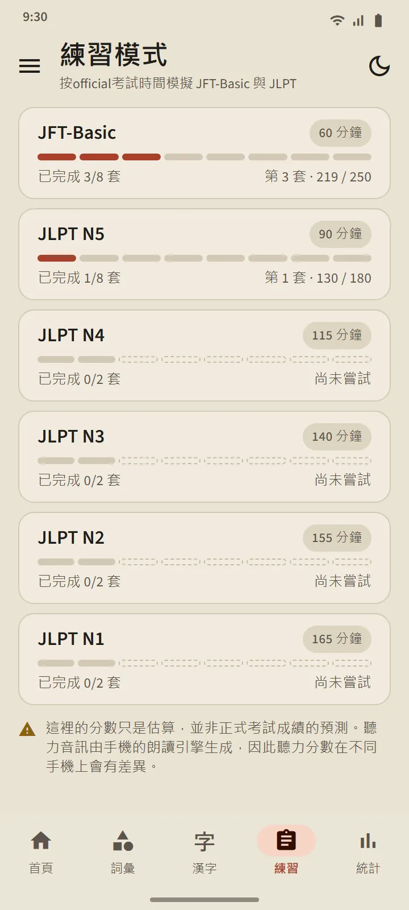
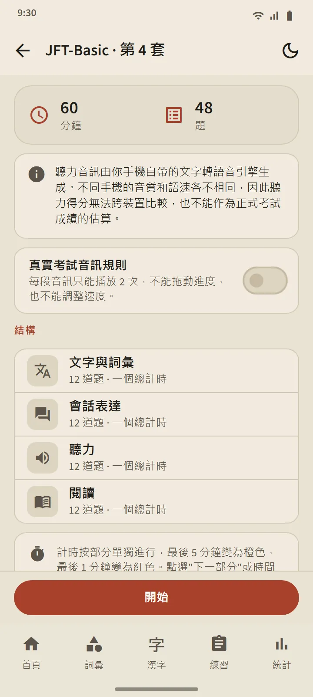
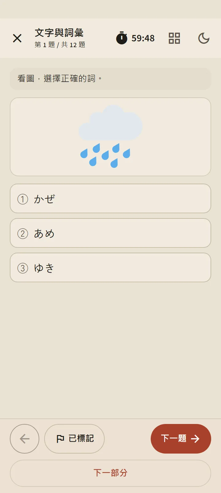
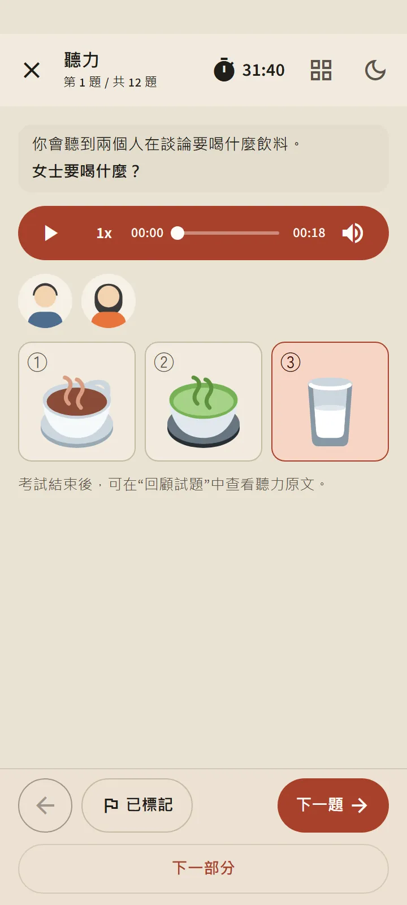
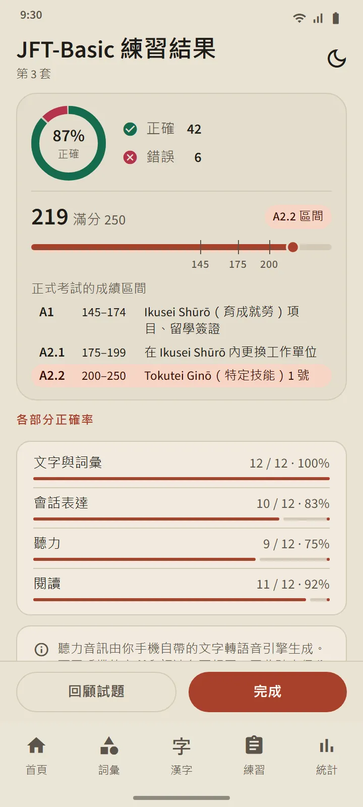
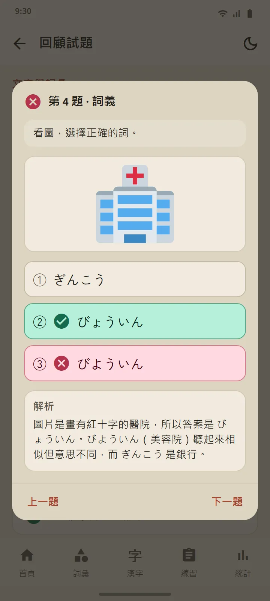

六個級別，24 套題
「練習」標籤頁中的每張級別卡片都會開啟級別頁面：一個「開始」按鈕、帶編號的套題方塊和歷史記錄。所有套題都做完後，混合練習開放，會優先出你從未見過的題目。新的套題會透過 App 更新送達。
| 考試 | 套數 | 每套題量 | 時間 |
|---|---|---|---|
| JFT-Basic | 8 | 48 | 60 分鐘 |
| JLPT N5 | 8 | 68 | 90 分鐘 |
| JLPT N4 | 2 | 85 | 115 分鐘 |
| JLPT N3 | 2 | 102 | 140 分鐘 |
| JLPT N2 | 2 | 107 | 155 分鐘 |
| JLPT N1 | 2 | 101 | 165 分鐘 |


題目形式仿照真實考試
JFT-Basic 的題目為三個選項（語法題為四個），情景說明和提問使用學習者的語言，許多題目配有圖片，與官方樣題一致。JLPT 的題目為四個選項，按級別標註相應的振假名，閱讀文本的形式多樣：短篇故事、便條、通知、訊息、電子郵件和資訊表。每一套題在釋出前都經過稽核，且沒有複製任何官方試題。
開始之前，說明頁面會顯示該套題的結構：分區、題量和計時。計時方式與真實考試相同：JFT-Basic 是統一的總時間，JLPT 則是每個科目各有時間。進入下一部分後，前一部分就會關閉，就像在考場裡一樣。你可以標記有疑問的題目，也可以暫時離開（計時不會停止），並從「練習」標籤頁繼續作答。


用手機的日語語音聽力
聽力原文由手機的日語文字轉語音引擎朗讀，每位說話人使用不同的聲音。與真實考試一樣，選項只能聽到，不會印出來；JFT-Basic 和 N5 使用圖片選項。「真實考試音訊規則」開關會把播放次數限制在真實考試允許的範圍內：JFT-Basic 播放兩次，JLPT 播放一次。
由於聲音來自各自的手機，不同裝置上的音質有差異；如果手機還沒有日語語音，App 會提示如何安裝，在安裝好之前會跳過聽力部分。

按官方刻度顯示結果，再逐題講解
JFT-Basic 的結果畫在 10–250 的刻度線上，在 145、175 和 200 處有標記，並標出等級名稱 A1、A2.1 和 A2.2，以及每個等級在真實考試中的用途。JLPT 的結果會把每個計分科目與其最低分對照顯示，因為在真實考試中只要有一個科目低於最低分就算不合格。兩者都附有每個科目和每種題型的正確率。
回顧試題按鈕會開啟每道題，顯示你的答案、正確答案和解析；聽力題還會顯示其原文。解析提供 12 種語言。每個級別的歷史記錄會儲存你最近的作答，得分圖表則在「統計」標籤頁中。
這些得分只是用於追蹤進步的估算，並非對你正式成績的預測。
句型有對應課程的語法題會透過「學習這個句型」直接連結到該課程。


免費版與 Premium
免費版開放所有套題。按下「開始」後，該級別的下一次作答會被鎖定 7 天；其他級別仍然開放，歷史記錄和解析永遠不會被鎖定。鎖定期間，你可以透過觀看廣告多解鎖一次作答。Premium 沒有這個間隔。題目頁面上永遠不會出現廣告，對所有人都是如此。